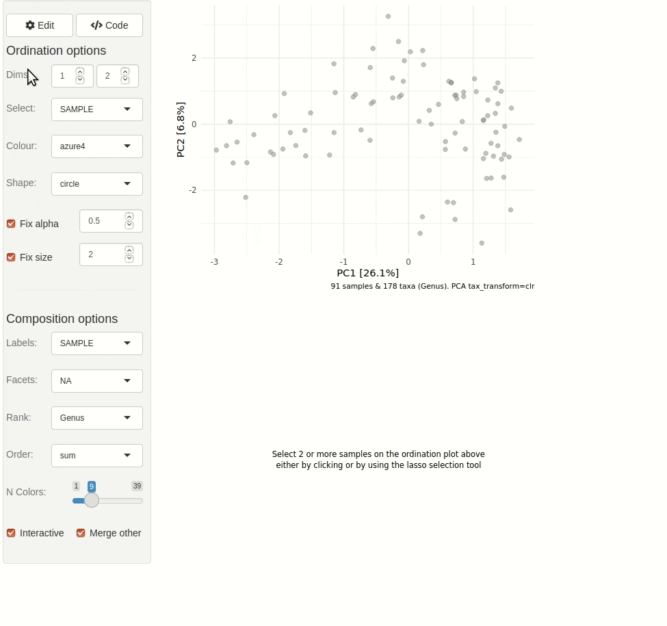
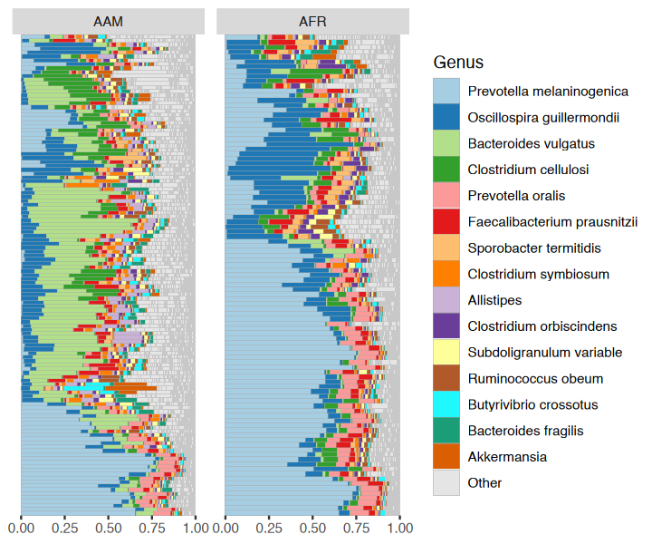
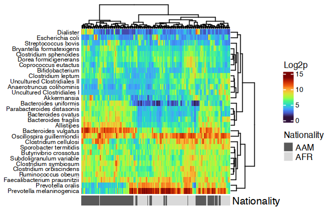
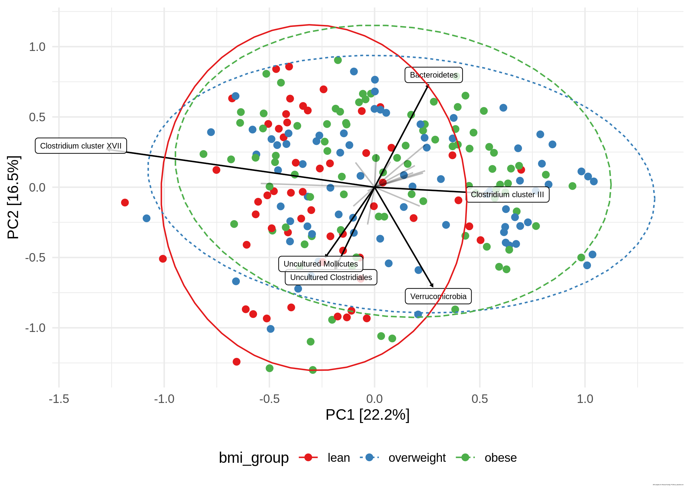
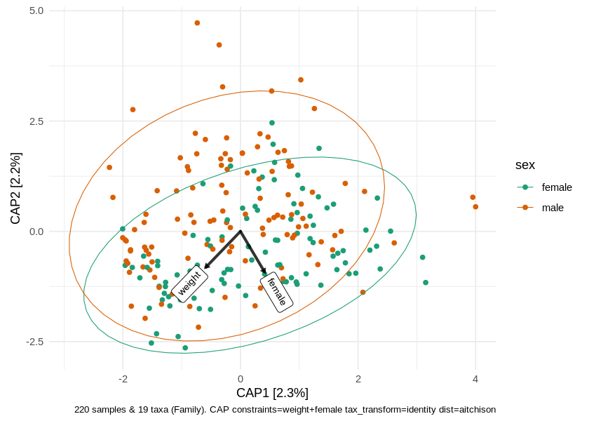
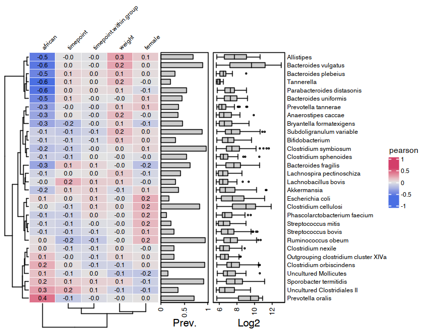

Overview
📦 microViz is an R package for analysis and visualization of microbiome sequencing data.
🔨 microViz functions are intended to be beginner-friendly but flexible.
🔬 microViz extends or complements popular microbial ecology packages, including phyloseq, vegan, & microbiome.
Learn more
📎 This website is the best place for documentation and examples: https://david-barnett.github.io/microViz/
This ReadMe shows a few example analyses
The Getting Started guide shows more example analyses and gives advice on using microViz with your own data
The Reference page lists all functions and links to help pages and examples
The News page describes important changes in new microViz package versions
-
The Articles pages give tutorials and further examples
Post on GitHub discussions if you have questions/requests
Installation
microViz is not (yet) available from CRAN. You can install microViz from R Universe, or from GitHub.
I recommend you first install the Bioconductor dependencies using the code below.
if (!requireNamespace("BiocManager", quietly = TRUE)) install.packages("BiocManager")
BiocManager::install(c("phyloseq", "microbiome", "ComplexHeatmap"), update = FALSE)Installation of microViz from R Universe
install.packages(
"microViz",
repos = c(davidbarnett = "https://david-barnett.r-universe.dev", getOption("repos"))
)I also recommend you install the following suggested CRAN packages.
install.packages("ggtext") # for rotated labels on ord_plot()
install.packages("ggraph") # for taxatree_plots()
install.packages("DT") # for tax_fix_interactive()
install.packages("corncob") # for beta binomial models in tax_model()Installation of microViz from GitHub
# Installing from GitHub requires the remotes package
install.packages("remotes")
# Windows users will also need to have RTools installed! http://jtleek.com/modules/01_DataScientistToolbox/02_10_rtools/
# To install the latest version:
remotes::install_github("david-barnett/microViz")
# To install a specific "release" version of this package, e.g. an old version
remotes::install_github("david-barnett/microViz@0.12.0") Installation notes
🍎 macOS users - might need to install xquartz to make the heatmaps work (to do this with homebrew, run the following command in your mac’s Terminal: brew install --cask xquartz
📦 I highly recommend using renv for managing your R package installations across multiple projects.
🐳 For Docker users an image with the main branch installed is available at: https://hub.docker.com/r/barnettdavid/microviz-rocker-verse
📅 microViz is tested to work with R version 4.* on Windows, MacOS, and Ubuntu 20. R version 3.6.* should probably work, but I don’t fully test this.
Interactive ordination exploration
library(microViz)
#> microViz version 0.12.5 - Copyright (C) 2021-2024 David Barnett
#> ! Website: https://david-barnett.github.io/microViz
#> ✔ Useful? For citation details, run: `citation("microViz")`
#> ✖ Silence? `suppressPackageStartupMessages(library(microViz))`microViz provides a Shiny app for an easy way to start exploring your microbiome data: all you need is a phyloseq object.
# example data from corncob package
pseq <- microViz::ibd %>%
tax_fix() %>%
phyloseq_validate()
ord_explore(pseq) # gif generated with microViz version 0.7.4 (plays at 1.75x speed)
Example analyses (on HITChip data)
# get some example data
data("dietswap", package = "microbiome")
# create a couple of numerical variables to use as constraints or conditions
dietswap <- dietswap %>%
ps_mutate(
weight = recode(bmi_group, obese = 3, overweight = 2, lean = 1),
female = if_else(sex == "female", true = 1, false = 0),
african = if_else(nationality == "AFR", true = 1, false = 0)
)
# add a couple of missing values to show how microViz handles missing data
sample_data(dietswap)$african[c(3, 4)] <- NALooking at your data
You have quite a few samples in your phyloseq object, and would like to visualize their compositions. Perhaps these example data differ by participant nationality?
dietswap %>%
comp_barplot(
tax_level = "Genus", n_taxa = 15, other_name = "Other",
taxon_renamer = function(x) stringr::str_remove(x, " [ae]t rel."),
palette = distinct_palette(n = 15, add = "grey90"),
merge_other = FALSE, bar_outline_colour = "darkgrey"
) +
coord_flip() +
facet_wrap("nationality", nrow = 1, scales = "free") +
labs(x = NULL, y = NULL) +
theme(axis.text.y = element_blank(), axis.ticks.y = element_blank())
#> Registered S3 method overwritten by 'seriation':
#> method from
#> reorder.hclust vegan
htmp <- dietswap %>%
ps_mutate(nationality = as.character(nationality)) %>%
tax_transform("log2", add = 1, chain = TRUE) %>%
comp_heatmap(
taxa = tax_top(dietswap, n = 30), grid_col = NA, name = "Log2p",
taxon_renamer = function(x) stringr::str_remove(x, " [ae]t rel."),
colors = heat_palette(palette = viridis::turbo(11)),
row_names_side = "left", row_dend_side = "right", sample_side = "bottom",
sample_anno = sampleAnnotation(
Nationality = anno_sample_cat(
var = "nationality", col = c(AAM = "grey35", AFR = "grey85"),
box_col = NA, legend_title = "Nationality", size = grid::unit(4, "mm")
)
)
)
ComplexHeatmap::draw(
object = htmp, annotation_legend_list = attr(htmp, "AnnoLegends"),
merge_legends = TRUE
)
Example ordination plot workflow
Ordination methods can also help you to visualize if overall microbial ecosystem composition differs markedly between groups, e.g. BMI.
Here is one option as an example:
- Aggregate the taxa into bacterial families (for example) - use
tax_agg() - Transform the microbial data with the centered-log-ratio transformation - use
tax_transform() - Perform PCA with the clr-transformed features (equivalent to Aitchison distance PCoA) - use
ord_calc() - Plot the first 2 axes of this PCA ordination, colouring samples by group and adding taxon loading arrows to visualize which taxa generally differ across your samples - use
ord_plot() - Customise the theme of the ggplot as you like and/or add features like ellipses or annotations
# perform ordination
unconstrained_aitchison_pca <- dietswap %>%
tax_agg("Family") %>%
tax_transform("clr") %>%
ord_calc()
# ord_calc will automatically infer you want a "PCA" here
# specify explicitly with method = "PCA", or you can pick another method
# create plot
pca_plot <- unconstrained_aitchison_pca %>%
ord_plot(
plot_taxa = 1:6, colour = "bmi_group", size = 1.5,
tax_vec_length = 0.325,
tax_lab_style = tax_lab_style(max_angle = 90, aspect_ratio = 1),
auto_caption = 8
)
# customise plot
customised_plot <- pca_plot +
stat_ellipse(aes(linetype = bmi_group, colour = bmi_group), linewidth = 0.3) + # linewidth not size, since ggplot 3.4.0
scale_colour_brewer(palette = "Set1") +
theme(legend.position = "bottom") +
coord_fixed(ratio = 1, clip = "off") # makes rotated labels align correctly
# show plot
customised_plot
PERMANOVA
You visualised your ordinated data in the plot above. Below you can see how to perform a PERMANOVA to test the significance of BMI’s association with overall microbial composition. This example uses the Family-level Aitchison distance to correspond with the plot above.
# calculate distances
aitchison_dists <- dietswap %>%
tax_transform("identity", rank = "Family") %>%
dist_calc("aitchison")
# the more permutations you request, the longer it takes
# but also the more stable and precise your p-values become
aitchison_perm <- aitchison_dists %>%
dist_permanova(
seed = 1234, # for set.seed to ensure reproducibility of random process
n_processes = 1, n_perms = 99, # you should use at least 999!
variables = "bmi_group"
)
#> 2024-11-18 15:43:00.162228 - Starting PERMANOVA with 99 perms with 1 processes
#> 2024-11-18 15:43:00.240951 - Finished PERMANOVA
# view the permanova results
perm_get(aitchison_perm) %>% as.data.frame()
#> Df SumOfSqs R2 F Pr(>F)
#> bmi_group 2 109.170 0.04104336 4.686602 0.01
#> Residual 219 2550.700 0.95895664 NA NA
#> Total 221 2659.869 1.00000000 NA NA
# view the info stored about the distance calculation
info_get(aitchison_perm)
#> psExtra info:
#> tax_agg = "Family" tax_trans = "identity" dist_method = "aitchison"Constrained partial ordination
You could visualise the effect of the (numeric/logical) variables in your permanova directly using the ord_plot function with constraints (and conditions).
perm2 <- aitchison_dists %>%
dist_permanova(variables = c("weight", "african", "sex"), seed = 321)
#> Dropping samples with missings: 2
#> 2024-11-18 15:43:00.255258 - Starting PERMANOVA with 999 perms with 1 processes
#> 2024-11-18 15:43:02.429889 - Finished PERMANOVAWe’ll visualise the effect of nationality and bodyweight on sample composition, after first removing the effect of sex.
perm2 %>%
ord_calc(constraints = c("weight", "african"), conditions = "female") %>%
ord_plot(
colour = "nationality", size = 2.5, alpha = 0.35,
auto_caption = 7,
constraint_vec_length = 1,
constraint_vec_style = vec_constraint(1.5, colour = "grey15"),
constraint_lab_style = constraint_lab_style(
max_angle = 90, size = 3, aspect_ratio = 0.8, colour = "black"
)
) +
stat_ellipse(aes(colour = nationality), linewidth = 0.2) +
scale_color_brewer(palette = "Set1", guide = guide_legend(position = "inside")) +
coord_fixed(ratio = 0.8, clip = "off", xlim = c(-4, 4)) +
theme(legend.position.inside = c(0.9, 0.1), legend.background = element_rect())
#>
#> Centering (mean) and scaling (sd) the constraints and/or conditions:
#> weight
#> african
#> female
Correlation Heatmaps
microViz heatmaps are powered by ComplexHeatmap and annotated with taxa prevalence and/or abundance.
# set up the data with numerical variables and filter to top taxa
psq <- dietswap %>%
ps_mutate(
weight = recode(bmi_group, obese = 3, overweight = 2, lean = 1),
female = if_else(sex == "female", true = 1, false = 0),
african = if_else(nationality == "AFR", true = 1, false = 0)
) %>%
tax_filter(
tax_level = "Genus", min_prevalence = 1 / 10, min_sample_abundance = 1 / 10
) %>%
tax_transform("identity", rank = "Genus")
#> Proportional min_prevalence given: 0.1 --> min 23/222 samples.
# randomly select 30 taxa from the 50 most abundant taxa (just for an example)
set.seed(123)
taxa <- sample(tax_top(psq, n = 50), size = 30)
# actually draw the heatmap
cor_heatmap(
data = psq, taxa = taxa,
taxon_renamer = function(x) stringr::str_remove(x, " [ae]t rel."),
tax_anno = taxAnnotation(
Prev. = anno_tax_prev(undetected = 50),
Log2 = anno_tax_box(undetected = 50, trans = "log2", zero_replace = 1)
)
)
Citation
😇 If you find any part of microViz useful to your work, please consider citing the JOSS article:
Barnett et al., (2021). microViz: an R package for microbiome data visualization and statistics. Journal of Open Source Software, 6(63), 3201, https://doi.org/10.21105/joss.03201
Contributing
Bug reports, questions, suggestions for new features, and other contributions are all welcome. Feel free to create a GitHub Issue or write on the Discussions page.
This project is released with a Contributor Code of Conduct and by participating in this project you agree to abide by its terms.
Session info
sessionInfo()
#> R version 4.4.0 (2024-04-24)
#> Platform: aarch64-apple-darwin20
#> Running under: macOS Sonoma 14.7
#>
#> Matrix products: default
#> BLAS: /Library/Frameworks/R.framework/Versions/4.4-arm64/Resources/lib/libRblas.0.dylib
#> LAPACK: /Library/Frameworks/R.framework/Versions/4.4-arm64/Resources/lib/libRlapack.dylib; LAPACK version 3.12.0
#>
#> locale:
#> [1] en_US.UTF-8/en_US.UTF-8/en_US.UTF-8/C/en_US.UTF-8/en_US.UTF-8
#>
#> time zone: Europe/Amsterdam
#> tzcode source: internal
#>
#> attached base packages:
#> [1] stats graphics grDevices utils datasets methods base
#>
#> other attached packages:
#> [1] ggplot2_3.5.1 dplyr_1.1.4 phyloseq_1.48.0 microViz_0.12.5
#> [5] testthat_3.2.1.1 devtools_2.4.5 usethis_3.0.0
#>
#> loaded via a namespace (and not attached):
#> [1] RColorBrewer_1.1-3 rstudioapi_0.16.0 jsonlite_1.8.8
#> [4] shape_1.4.6.1 magrittr_2.0.3 farver_2.1.2
#> [7] rmarkdown_2.27 GlobalOptions_0.1.2 fs_1.6.4
#> [10] zlibbioc_1.50.0 vctrs_0.6.5 multtest_2.60.0
#> [13] memoise_2.0.1 Cairo_1.6-2 htmltools_0.5.8.1
#> [16] curl_5.2.1 Rhdf5lib_1.26.0 rhdf5_2.48.0
#> [19] htmlwidgets_1.6.4 plyr_1.8.9 cachem_1.1.0
#> [22] commonmark_1.9.1 igraph_2.0.3 mime_0.12
#> [25] lifecycle_1.0.4 iterators_1.0.14 pkgconfig_2.0.3
#> [28] Matrix_1.7-0 R6_2.5.1 fastmap_1.2.0
#> [31] clue_0.3-65 GenomeInfoDbData_1.2.12 shiny_1.9.1
#> [34] digest_0.6.36 selectr_0.4-2 colorspace_2.1-1
#> [37] S4Vectors_0.42.1 ps_1.7.7 pkgload_1.4.0
#> [40] seriation_1.5.5 vegan_2.6-8 labeling_0.4.3
#> [43] fansi_1.0.6 httr_1.4.7 mgcv_1.9-1
#> [46] compiler_4.4.0 remotes_2.5.0 doParallel_1.0.17
#> [49] withr_3.0.1 viridis_0.6.5 pkgbuild_1.4.4
#> [52] highr_0.11 MASS_7.3-61 sessioninfo_1.2.2
#> [55] rjson_0.2.22 biomformat_1.32.0 permute_0.9-7
#> [58] tools_4.4.0 chromote_0.2.0 ape_5.8
#> [61] httpuv_1.6.15 glue_1.8.0 nlme_3.1-165
#> [64] rhdf5filters_1.16.0 promises_1.3.0 gridtext_0.1.5
#> [67] grid_4.4.0 Rtsne_0.17 cluster_2.1.6
#> [70] reshape2_1.4.4 ade4_1.7-22 generics_0.1.3
#> [73] gtable_0.3.5 microbiome_1.26.0 ca_0.71.1
#> [76] tidyr_1.3.1 websocket_1.4.2 data.table_1.15.4
#> [79] xml2_1.3.6 utf8_1.2.4 XVector_0.44.0
#> [82] BiocGenerics_0.50.0 markdown_1.13 foreach_1.5.2
#> [85] pillar_1.9.0 stringr_1.5.1 later_1.3.2
#> [88] circlize_0.4.16 splines_4.4.0 ggtext_0.1.2
#> [91] lattice_0.22-6 survival_3.7-0 tidyselect_1.2.1
#> [94] registry_0.5-1 ComplexHeatmap_2.20.0 Biostrings_2.72.1
#> [97] miniUI_0.1.1.1 knitr_1.48 gridExtra_2.3
#> [100] IRanges_2.38.1 stats4_4.4.0 xfun_0.46
#> [103] Biobase_2.64.0 matrixStats_1.3.0 brio_1.1.5
#> [106] stringi_1.8.4 UCSC.utils_1.0.0 yaml_2.3.10
#> [109] evaluate_0.24.0 codetools_0.2-20 tibble_3.2.1
#> [112] cli_3.6.3 xtable_1.8-4 munsell_0.5.1
#> [115] processx_3.8.4 Rcpp_1.0.13 GenomeInfoDb_1.40.1
#> [118] png_0.1-8 parallel_4.4.0 ellipsis_0.3.2
#> [121] profvis_0.3.8 urlchecker_1.0.1 viridisLite_0.4.2
#> [124] scales_1.3.0 purrr_1.0.2 crayon_1.5.3
#> [127] GetoptLong_1.0.5 rlang_1.1.4 TSP_1.2-4
#> [130] rvest_1.0.4